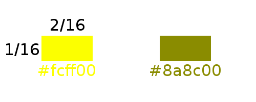

Development Resources
For the following commands you need to add "mesecons" to the dependencies of your mod.
General information
There are 3 basic node types that you need to know about for Mesecon development.
You usually define two different nodes for each receptor / conductor / effector:
- An active one, that emits / conducts / receives energy, its state is mesecon.state.on
- An inactive one, that doesn't emit / conduct / receive energy, its state is mesecon.state.off
Every definiton of a mesecon items also contains "rules". Rules define what positions the node connects to. For instance, normal mesecons connect to all nodes around them at the same height, above or below. Vertical mesecons only connect to those nodes that are above or below.
There are some preset rules:
- mesecon.rules.default The standard rules, used if no rules are specified.
- mesecon.rules.buttonlike The rules that buttons and wall levers use.
- mesecon.rules.flat Node only connects to others at the same height (e.g. Microcontroller)
You can also make rules yourself, it is even possible to make rules dependent on the orientation of the node: See the "Rules" section below.
The definition of a node includes a mesecons = {...} field that contains all the code for the mesecons integration.
Conductors

minetest.register_node("any:name", {
...
mesecons = {conductor = {
state = mesecon.state.on/off
onstate = "any:name_on"
offstate = "any:name_off"
rules = mesecon.rules
}}
}) = a mesecon.state | Defines if the conductor is active or inactive
onstate = a nodename | Required if state == mesecon.state.off | Defines the other nodename of the conductor definition, the active one.
offstate = a nodename | Required if state == mesecon.state.on | Defines the other nodename of the conductor definition, the inactive one.
rules = a mesecon.rules | If not specified, is mesecon.rules.default | Defines the connection rules of the conductor | Can be a function or a rules table
Receptors
Receptors are nodes that
send out mesecon energy.

minetest.register_node("any:name", {
...
mesecons = {receptor = {
state = mesecon.state.on/off
rules = mesecon.rules
}}
}) = a mesecon.state | Defines if the receptor is active or inactive
rules = a mesecon.rules | If not specified, is mesecon.rules.default | Defines the connection rules of the receptor | Can be a function or a rules table
If a receptor recognized something and you want it to turn on, you have to call
minetest.set_node(pos, {name="myreceptor:receptor_on"})
mesecon.receptor_on(pos, rules)
...to turn it off again:
minetest.set_node(pos, {name="myreceptor:receptor_off"})
mesecon.receptor_off(pos, rules)Effectors
Effectors do something when they receive power.

minetest.register_node("any:name", {
...
mesecons = {effector = {
rules = mesecon.rules
action_on = function (pos, node)
-- do something to turn the effector on
end
action_off = function (pos, node)
-- do something to turn the effector off
end
action_change = function (pos, node)
-- do something whenever any input to the effector changes
end
}}
})
All action functions are optional, but obviously there should be at least one to have your effector do anything at all.
rules = a mesecon.rules | If not specified, is mesecon.rules.default | Defines the connection rules of the effector | Can be a function or a rules table
action_on a function (pos, node) | It is called when the effector receives power and is not powered by anything else
action_off a function (pos, node) | It is called when the effector doesn't receive power anymore and is not powered by anything else
action_change a function (pos, node) | Called if action_on or action_off are called, but also if the receptor is already being powered and a change occurs somewhere (e.g. used by microcontroller)
Rules
Rules are a table of relative positions that describe what nodes around an effector/receptor/conductor it links to, e.g. where a receptor turns on conductors.
myrules =
{{x=-1, y=0, z=0},
{x=1, y=0, z=0}}
These rules link to the nodes at the x+ side and x- side of the effector/receptor/conductor.
There are some cases in which the rules depend on the rotation of a node, e.g. for the delayer.
In this case you just use a function instead of a table:
rules = function(node)
if node.param2 == 1 then
return {{x=1, y=0, z=0}}
elseif node.param2 == 2 then
...
end
endComplex items
Complex items like the microcontroller, gates, the dealyer or the torch are both effectors and receptors. Explaining them would be too much for a dev reference - check out their code!
Design
VanessaE is the design leader of mesecons. Ask her for detailed information about mesecon design.
This shows the colors and the proportions of a mesecon wire:

The default texture size is 16x16. In special cases you may use 32x32 (e.g. Microcontroller), but only make the important parts of the texture in that resolution (for the Microcontroller it is only the letters at the input ports) and keep the rest in 16px which means 2x2 pixels.
Contribute
You contribute by forking the repository on GitHub and sending a pull request. You may also contribute to the digilines mod (which is an extension that provides a digital bus system) or to this website.
Mesecons mod repository (Lua)
Mesecons.net repository (HTML, CSS, JavaScript)
Digilines mod (extension, Lua)
Guidelines
Make sure you follow the
Development Guidelines before sending a pull request.